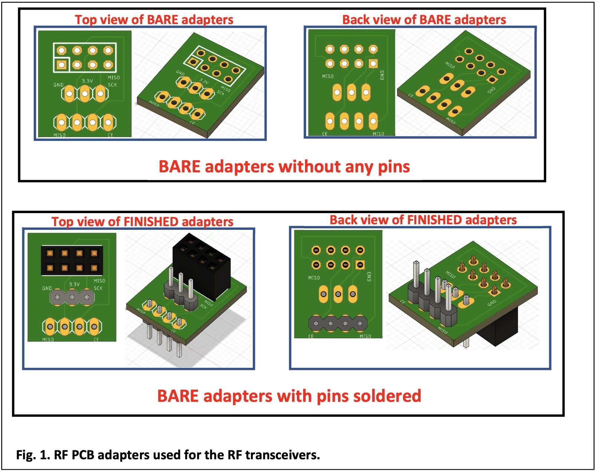
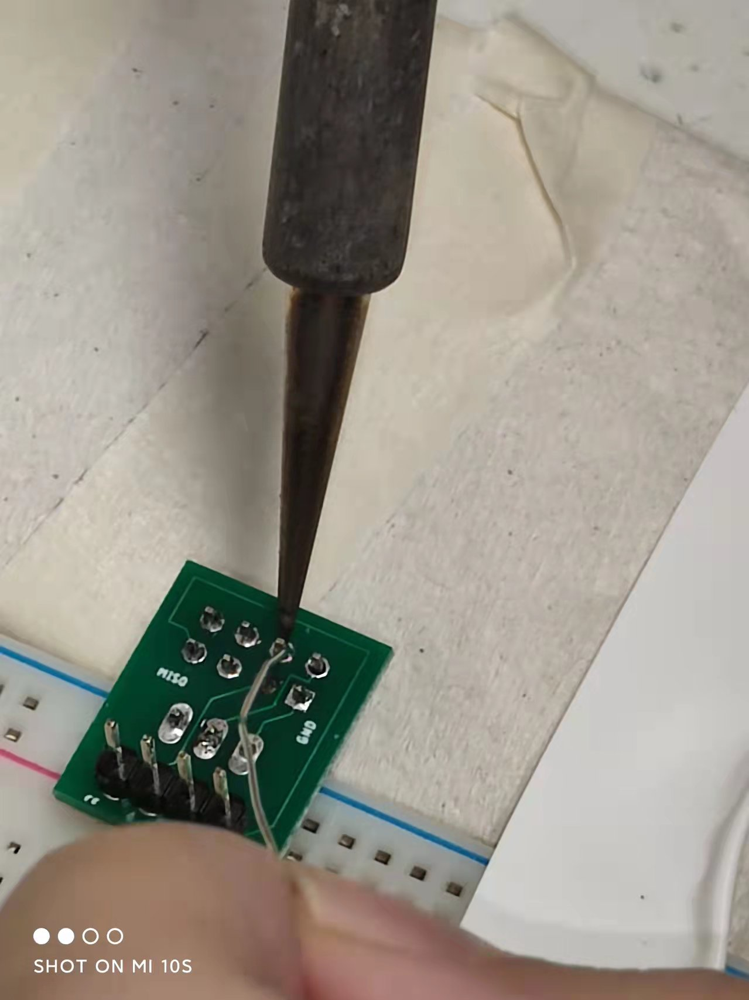
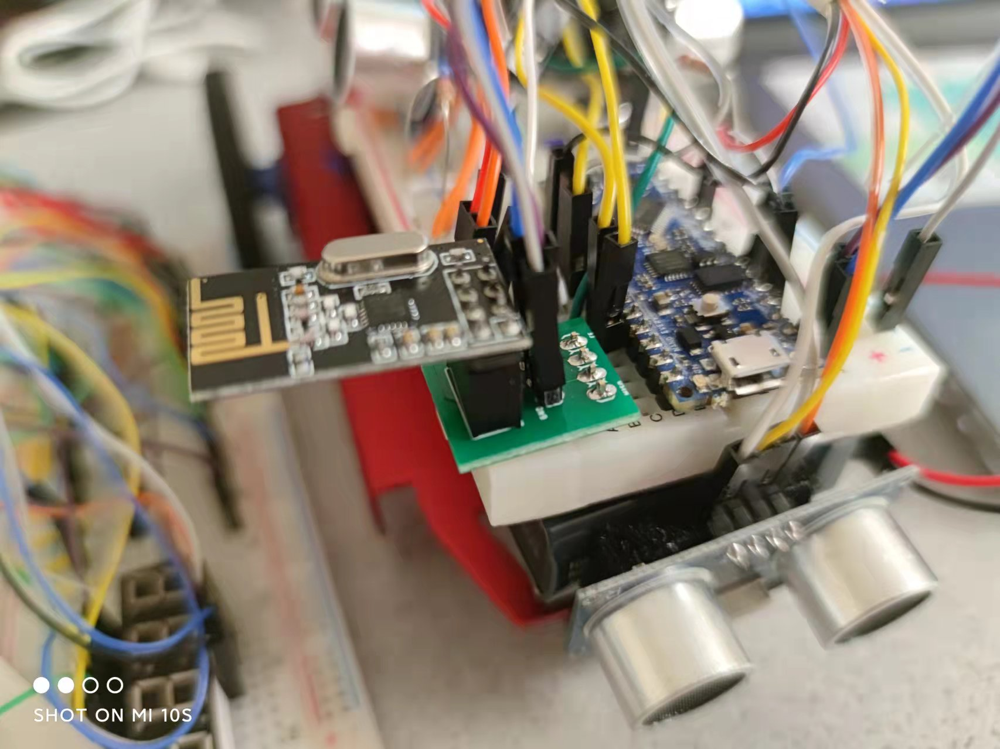
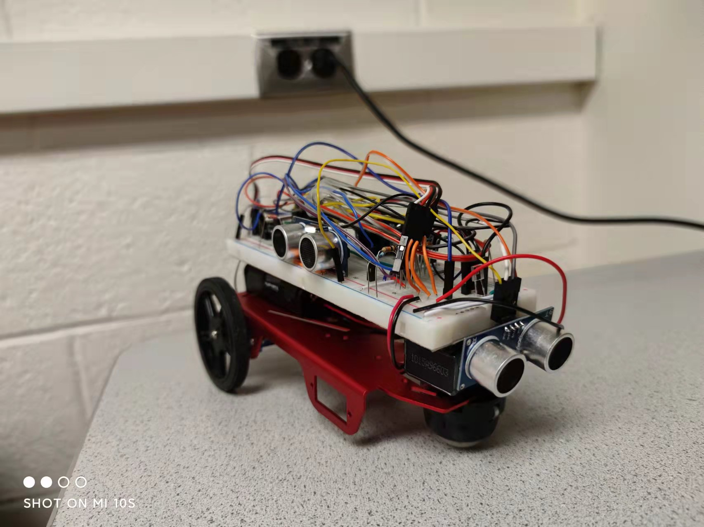
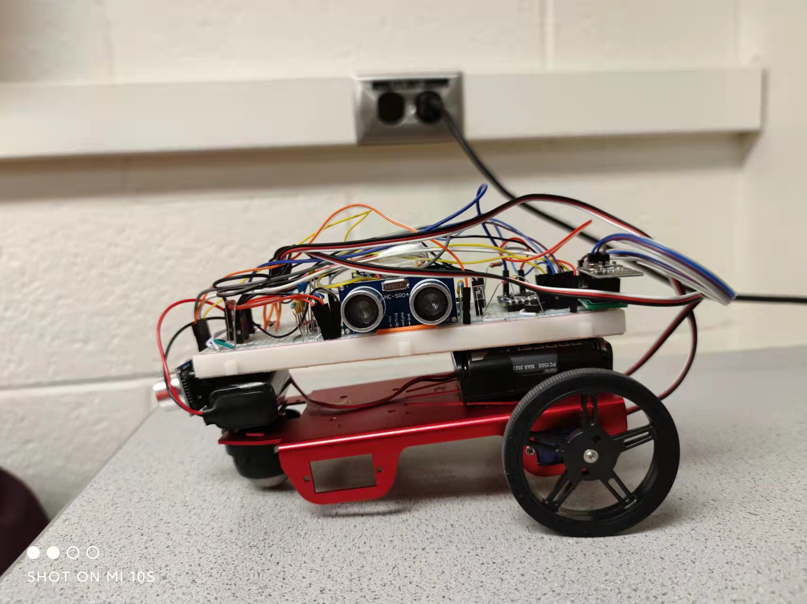
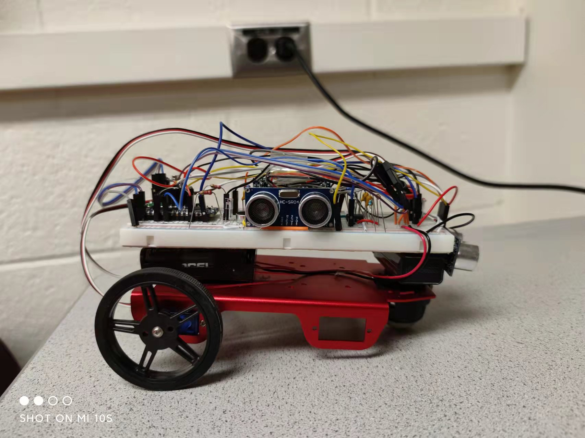
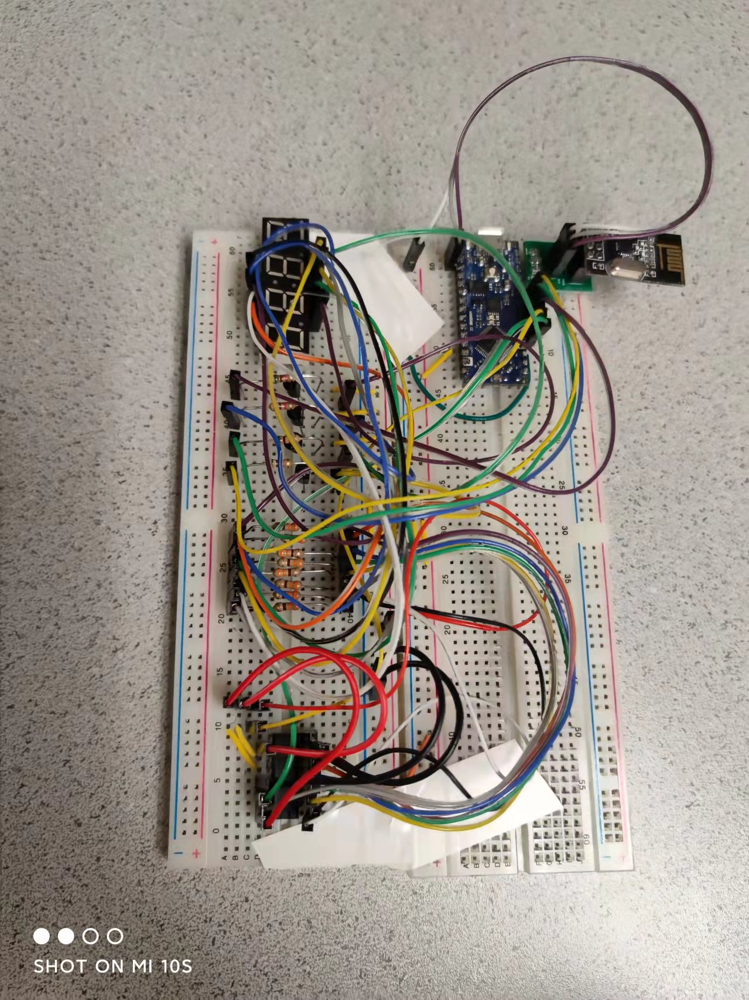
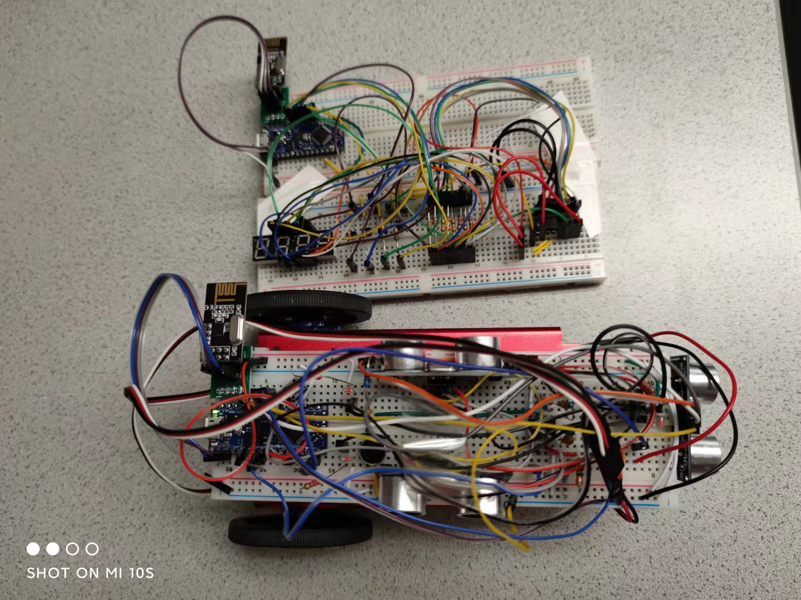
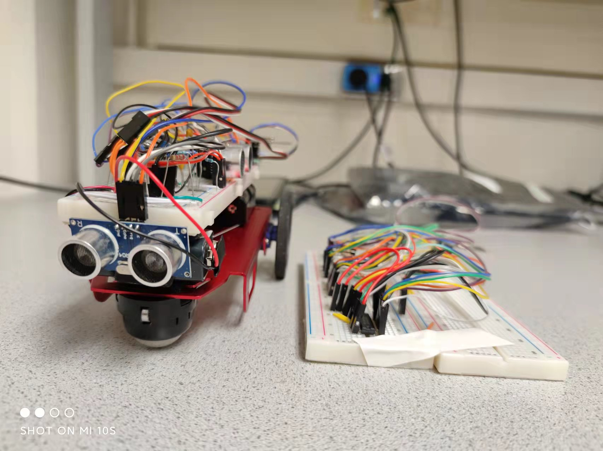

Objectives:
- Work on the RF communication between the robot and the base station.
- Re‐code blocking statements.
- Replace any instance of analogRead() with direct coding of the ADC.
- Finalize our onboard FFT.
- Install an override start button.
- Implement a snavigation algorithm that our robot will use to navigate the maze in the Final Demo.
- Implement PID control.
- Ensure that our base station can receive the signal from the robot and display the frequency.
- Revisit and ensure that the ultrasonic sensors, phototransistors and microphone circuits operate and provide necessary input to our robot.
Materials:
- Robot
- 2 x RF PCB adapters
- Jumper wires
- 1 x LM358 op‐amp
- 1 x 9V battery and snap connector
- Small breadboard with blinking IR LED setup
- Two 4‐pin,and two 3‐pin, each snapped off from row of headers
- Two 8‐pin header receptacles
- Two PCB adapters
- Two RF transceivers
- Two USB cable
- Pushbutton & resistor
Procedure:
1. Soldering the PCB RF Adapters
  
2. Non‐Blocking Coding
3. Replace analogRead()
4. FFT & Override Button
5. Navigation
6. PID Control
7. Frequency Measurement & Display
8. Final Demo
     